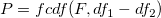
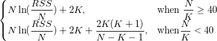
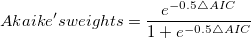

\;/\;(df_1-df_2)}{RSS_2\;/\;df_2} \,\!")
「fitcmpmodel」Xファンクション (メニューから解析：フィット：モデルの比較を選択) は、2つの異なるフィット関数を使って1つのデータセットをフィットするために結果を比較します。これは、どのモデルがよりよいかを決定する機能です。
フィット比較ツールは、データセットから直接結果を計算しません。これは、フィット結果のワークシートを入力とします。つまり、2つのモデルを比較するには、最初にデータセットを2つの異なるモデルで別々にフィットし、そして、フィットレポートワークシートをXファンクションの入力として選択します。モデルの比較は3つの異なる検定、 F検定、2次のAIC(赤池情報量基準)検定、BIC(ベイズ情報量基準)検定を使って行われます。
F検定は、2つのモデルがネストしていると仮定し、2次多項式と3次多項式のようにあるモデルがもう一方のモデルを単純化したものだとして計算します。F値は次のように計算されます。
ここで RSS1 と df1 は、単純化したモデルの残差平方和と自由度です。そして、次式によって、確率pを計算することができます。

モデルがネストしていない場合、F検定の結果は使用しないでください。例えば、モデルが同じ自由度を持つ場合、df1-df2は0になり、F値を計算することはできません。
一方で、AIC検定は2つのモデルがネストしている必要はありません。ですから、どのモデルでもこの方法で比較することができます。
各モデルに対して、Originは次式でAICの値を計算します。

2つのフィットモデルに対して、より小さいAIC値を持つモデルが、そのデータセットに対してはより良いモデルであると言うことができます。
また、次式で計算できるAkaikeの重みの値に基づいて判断することもできます。

ここで ∆AIC は、2つのAIC値間の差です。Akaikeの重みは、良いモデルの確率を示しています。
ベイズ情報基準はモデル選択基準で、AIC検定から修正されたものです。
BIC検定に課されるペナルティはAIC数式と似ていますが、定数2の代わりにkに対するln(n) を乗数として使い、サンプルサイズnを要素に加えます。 これはデータフィットに関するオーバーフィットの問題を回避できます。
+K\ln \left(N \right)")
Note: フィット比較モデルは、RSS, df, Nの値が必要です。フィットの際にこれらの結果を出力するようにしてください。